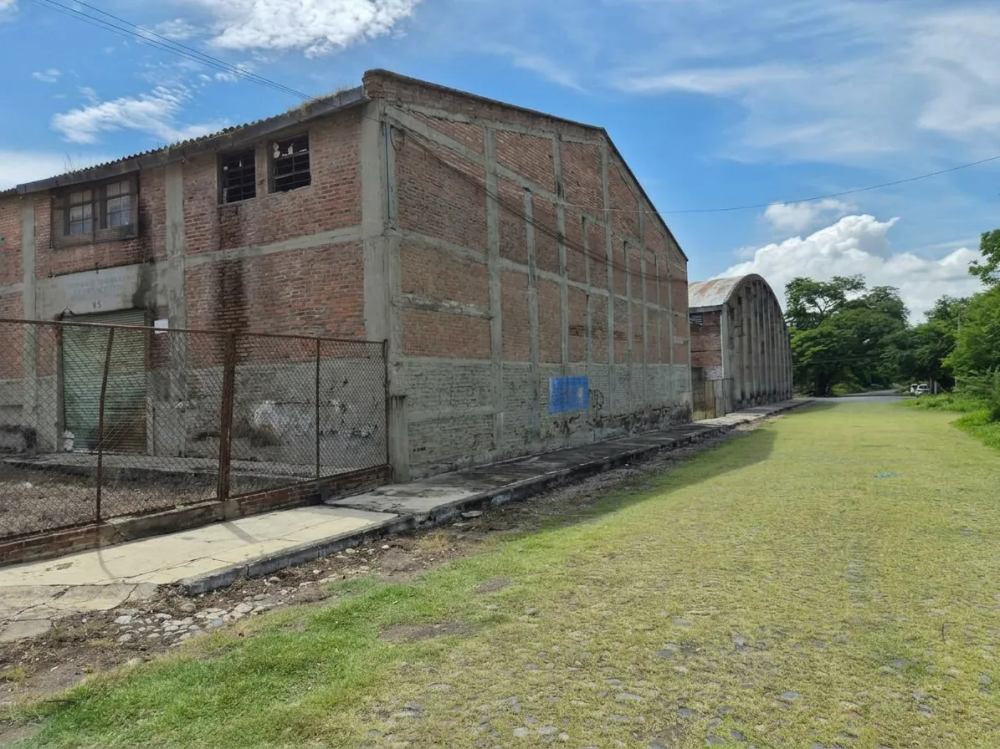

7,178 m²
- Perímetro≈ 433 m
- Frente a vía férrea≈ 161 m
- Frente interior≈ 131 m
- Costado oriente≈ 53 m
- Escalones de lindero16 · 22 · 50 m

En venta · Colima, Colima
Antiguas instalaciones del ferrocarril: tres polígonos contiguos, naves de tabique existentes y un frente privilegiado a la vía. Para quien busca escala, ubicación y carácter.
El predio
No es un lote aislado: son más de dos hectáreas dentro de la mancha urbana, con naves de tabique, patio amplio y colindancia directa a la vía férrea. Alrededor hay vivienda, parque, servicios de salud y avenidas principales.
El conjunto admite usos de bodega, recinto, desarrollo mixto o reconversión del patrimonio industrial, según el proyecto del comprador.
Superficie y medidas
Superficies y linderos calculados a partir del archivo KMZ de polígonos. Sirven para apreciar la escala; el levantamiento formal se confirma en escrituras y plano topográfico.
7,178 m²
940 m²
12,305 m²
Total del conjunto ≈ 20,422 m² (2.04 ha). Los colores corresponden a los del KMZ.
Ubicación
El predio se asienta entre la calle Ferromex, Carraleros y Progreso, en la zona El Tívoli / Col. Riva Palacio, ciudad de Colima. El mapa muestra el mismo trazo del archivo KMZ.
Vía férrea Ferromex y la estación de ferrocarril de Colima. Frente largo, visible y difícil de replicar en la ciudad.
Jardín El Tívoli, colonia Quinta El Tívoli y Parque Hidalgo. Zona arbolada, residencial y de esparcimiento.
Calle Ferromex, ALFER (cercas perimetrales) y la colonia Costeño. Acceso vehicular claro al predio.
Calle Carraleros, Normalistas de México y el corredor de Av. Rey Colimán, con el Instituto Estatal de Cancerología a pocos minutos.
Planos
Siete láminas tabloide con la ubicación de los predios, de la escala de ciudad al detalle de cada polígono. Ábrelas en grande o descarga el PDF.
Galería
Naves, patio, vía y calles de acceso. Toca cualquier foto para verla en pantalla completa; usa las flechas o desliza para avanzar.
Siguiente paso
Con gusto compartimos escrituras, medidas oficiales y condiciones de venta. Pregunta por disponibilidad para recorrer el predio.